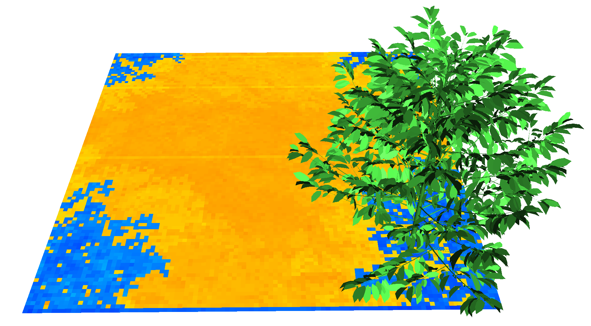

General configuration file
config.yaml
This file lists the main configuration parameters for a simulation. It controls the simulation by pointing towards the files for the meteorology data (e.g. meteo.csv), the models configuration (e.g. plant_coffee.yml), and the scene (e.g. coffee.ops).
Although entries in the configuration file are not ordered, the following example is organized in sections for clarity.
A full working example is available in the folder presented in the previous page (“config.yml”). It is highly recommended to open this file to follow along.
Input files
At the beginning of the example file, we find the three parameters used to enter the path to the other files:
scene: scene/coffee.ops # Path to a scene, i.e. ops, opf or gwa file.
models:
- models/plant_coffee.yml # Path to the models for the coffee
- models/soil.yml # Path to the models for the soil file
meteo: meteo.csv # Path to the meteo fileThe scene file is typically an .ops file that is used to build a 3D scene with plants and other geometries. It lists each instance of an object in the scene (e.g. a coffee plant), the Group it belongs to and its position (see the sections about .ops and .opf/.gwa files for more details).
The model files store the parameters associated to a Group named in the .ops file. Each Group present in the .ops file must have a model file listed in the models parameter. The example config.yml file lists the files to the models for the coffee group and the soil group. The models associated to the coffee are found in the models/plant_coffee.yml file, and the models associated to the soil module are found in the models/soil.yml file.
If there are several groups (e.g. a coffee tree and an oil palm) in the scene (.ops), the models files should all be listed as follows:
models:
- models/plant_coffee.yml # Path to the models for the coffee
- models/plant_elaeis.yml # Path to the models for the palm plant
- models/soil.yml # Path to the models for the soil fileThe meteo parameter points to a meteo file. See this section for more details.
Simulation controls
The next parameter allows to filter the meteorology steps from the configuration file if needed:
meteo_range: 2, 3 # use only steps from 2 to 3 (inclusive, start from 1) in meteo file
#meteo_range: 2016/07/01 8:00:00, 2016/07/01 12:00:00 # use only steps between given date/timeIt is given as a range in terms of either:
- steps index (starting from 1), e.g.: 2,5 for steps 2, 3, 4 and 5
- dates, e.g. 2016/07/01 8:00:00, 2016/07/01 12:00:00
Then we find some parameters for the simulation:
scene_rotation: 0 # Rotation of the scene from the North axis (degrees)
sky_sectors: 16 # Must be either 1, 6, 16, 46, 136 or 406
all_in_turtle: false # false: direct radiation is computed using the true sun position; true: direct radiation is computed using sky sectors
radiation_timestep: 5 # [minutes] frequency for the computation of the sun's radiation within each timestep
scattering: true # true: compute multiple scattering
pixel_size: 3 # Size of the side of the pixel, relates to the number of rays sent in the scene for each direction (cm pixels-1). Decrease value for increased resolution.
toricity: true # Make the scene toric (if false, increase the plot boundaries so all components are sampled)
cache_pixel_table: false # true: pixel tables are cached on disc instead of kept in memory (slower but use less memory + allow to reuse them).
cache_radiation : true # true : precomputed intercepted/scattered radiation to speed up simulationscene_rotation is used to rotate the scene around the vertical axis, starting from the North axis, and is provided in degrees.
sky_sectors is used to define how many sectors are used to divide the hemisphere of the sky (called the turtle). ARCHIMED-φ uses discrete directions for the computation of light interception (at least for the diffuse light). These directions are given by each sector of the turtle, so the more directions there are, the most precise is the computation of light interception, but also the more computations there are, so the more time it will take to complete a simulation. A good rule of thumb is to take at least 16 directions if the interception is needed at plant scale, 46 if it is for branch-scale, and 136 or even 406 for leaf scale.
This recommendation is quite robust because the error tends to be compensated from one scale to the other. For example if we simulate a palm tree with 16 directions, the error would be quite high if we compare with observations at leaflet scale. But if we integrate at leaf scale, it would be quite close to the observations, and even closer if we integrate over the whole plant.
Sky sectors defined for a turtle splitting of 46 sectors
all_in_turtle is a boolean that defines if the direct radiation is computed using the true sun position (true), or if the direct radiation is computed using sky sectors (false). In the second case, the sun direction is still computed precisely, but the radiation is spread between sky sectors close to the sun position, using the same computation as for the diffuse light. The latter method is faster than the former. In general it is more precise to use all_in_turtle: true, but the difference tends to disappear when there is a sufficient number of sectors (e.g. 46 sectors).
radiation_timestep. The duration of each time-step for the simulation is given in the meteorology file. Because the sun moves rapidly in the sky, especially in the morning, the direct radiation received on a plane at the surface of the earth changes rapidly too. Think of the radiation you receive at 8 in the morning and then at 9 am. They differ quite a bit. Hence, the computation of the light interception could be biased if we were to use only the average position of the sun for a time-step due to the non-uniformity of the radiation inside this time-step (i.e. the average radiation in the time-step is different than the radiation at the average sun position).
To alleviate this issue, it is possible to discretize the time-step in sub-steps of radiation_timestep minutes. The sun position and the radiation are both computed for each sub-step, and the resulting position and radiation used for the time-step come from the position at the barycenter of all positions, and the integrated radiation of all the sub-steps inside the time-step. It is an efficient way to approximate the effective radiation in a time-step when the time-step duration implies a substantial movement of the sun.
It is generally admitted that a radiation_timestep of 5 is largely sufficient.
scattering is a boolean to choose if light scattering is computed or not. This computation is probably the most resource demanding in ARCHIMED-φ, but is quite important for a precise estimation of the light interception of an object, especially when computing photosynthesis.
pixel_size defines the size of the side of a pixel (cm pixels-1). It is the way the plot is spatially sampled in horizontal directions. The light interception is computed using “pixel tables” in ARCHIMED-φ. There is a pixel table for each sky sector of the turtle. The scene is projected onto the ground of the scene for each direction defined by a sky sector. Light rays are sent from the sky sector to each pixel from the pixel table, and the “hits” with the objects from the scene are computed using these rays. Because the pixel_size defines the size of the pixels in the scene, it can be viewed as a way to change the “resolution” of the computation. If we decrease its value, we get more pixels with a smaller size, so we cast more rays through the scene.
Toricity
toricity is a Boolean controlling the plot toricity. The use of the toricity option allows generating virtually infinite canopies from the plot defined in the .ops. The name toricity comes from the shape and properties of a torus, where the conditions of one end are close to the ones from the other end.

A flat scene can be turned into a torus to connect the scene boundaries between each others. Attribution: Lucas Vieira / Public domain, from https://commons.wikimedia.org/wiki/File:Torus_from_rectangle.gif
{kind=link}
In ARCHIMED-φ, the light rays reaching an horizontal boundary of the scene (e.g maximum Y boundary) re-enter the scene from the opposite direction of the scene (e.g minimum Y boundary).
Here is our example 3D scene with a coffee tree planted near the boundary of the scene:
A simulation of the light interception in this scene with the toricity set to true would give the following image after rendering in Xplo with the soil colored by the value of the light it absorbs to get a feeling of the projected shade from the coffee tree:

The scene toricity can be seen looking at the projected shade by the coffee onto the ground. The shade of the coffee is projected on almost all corners of the scene because the scene is virtually repeated infinitely, so there is virtually a coffee tree near each corner of the scene. If we copy/paste the results from the previous scene 4 times in a new .ops, we get a better idea of the effect of toricity after rendering in XPlo:
A coffee tree in a toric 3x3m scene, repeated 4 times after simulation. The soil is colored by Ra_PAR_f, the in \(W m_{component}^{-2}\).
cache_pixel_table is a boolean used to define if the pixel tables are cached on disc instead of keeping them in-memory. Caching the pixel tables (true) result in a slower simulation due to writing, but uses less RAM. Users with low-end computers can activate this option if they have not enough memory for a simulation.
The cache_radiation parameter allows to cache in-memory the computation of light interception (interception and scattering) for each component in all directions of the turtle. This allows to compute only once the light received by a component from each direction in terms of relative radiation, and then to only compute the absolute value using the global radiation of the step for the following steps. It is generally admitted this parameter should be set to true when the number of time-steps to simulate is greater than the number of directions, i.e. nrows(meteo) > sky_sectors. It should be set to false otherwise because the extra computations needed for the cache is generally greater than the independent simulation of each step (computation overhead).
For example a simulation taking ~3.4 minutes (23M rays, 46 directions) for each time-step can be decreased to ~2 seconds with the option activated.
Careful, activating this parameter results in higher memory consumption.
This option can be used to cache the radiation interception computation on disk for further simulations at another time, but it should be used on the exact same scene (same geometry).
Outputs
Then, the following parameters control the model outputs. In ARCHIMED-φ, the outputs of the model are placed in a folder associated to a given simulation, which are all grouped in a more general output directory.
# OUTPUTS
output_directory: output # Path to the output directory (the folder is created if not already existing)
simulation_directory: simdir # Optional : path to the simulation directory (replace the automatic counter based directory name generation)The output_directory parameter names the general output directory where the simulation folders will be grouped.
The simulation folders are named automatically following an incremental numbering, e.g. the first simulation is named 000001, the second 000002, etc…
If the user wants to name the simulation folder differently, he can use the simulation_directory to provide it (it is overwritten if pre-existing). To use again the automatic numbering, please remove the parameter altogether.
It is good practice to use a separate
output_directoryfor different unrelated projects, and to name the simulation usingsimulation_directoryafter the use case, such as a particular planting design or a different age.
For example if we have two projects, one to simulate different planting designs of coffee trees in Costa Rica, and one to simulate eucalyptus trees in Brazil, we would useoutput_directory: output_coffee_designs, and thenoutput_directory: output_euca_brazilrespectively. And the simulation names would be adapted to the use case to get a folder structure such as:
📦
├── 📜config.yml
├── 📜const.yml
├── 📜meteo.csv
├── 📂models
│ └── ...
├── 📂scene
│ └── ...
├── 📂output_coffee_designs
│ ├── 📂design_1
│ │ └── ...
│ ├── 📂design_2
│ │ └── ...
│ └── 📂...
└── 📂output_euca_brazil
├── 📂age_1
│ └── ...
├── 📂age_2
│ └── ...
└── 📂...Several files are written in each simulation_directory, but the user can control if some are needed or not.
write_summary: true # If true export the simulation summary in a csv fileThe write_summary parameter is a boolean to choose if a summary file is needed for the simulation. This file is a .csv file summarizing the area and intercepted radiation (Ri_q) grouped by time step, group, type, and item_id.
More files are available for simulation outputs:
the
component_values.csvfile that provide the values of the variables needed at component scale (e.g. the interception of each leaf) for each individual object (i.e. a plant, or a.gwa);the scene files (
.opf,.gwaand.opsfiles), which are a copy of the original scene, but with the topology and geometry files of each objects enriched with new simulated variables.
The component_values.csv is written only if the component_variables parameter is present in the config.yml file (see below). The scene files are only present if the export_ops parameter is set to true:
export_ops: trueComponent variables
Many variables are available as ARCHIMED-φ outputs to write into the component_values.csv file. The component_variables parameter lists the variables needed as outputs:
# List of columns in the component_values.csv file:
component_variables:
step_number: true # Index of the step
step_duration: true # Step duration in seconds
item_id: true # Item id (as given as plant_id in the OPS)
component_id: true # Component unique ID in the item (as read in the OPF)
group: true # Functional group (as given by the Group field in the plant.yml file)
type: true # Component type (as given by the Type names in the plant.yml files)
area: true # Component area (i.e. mesh area, m2)
surface_hits: true # Component hit count per area unit (m-2)
barycentre_x: false # Barycentre of the component x (~ X position of the component).
barycentre_y: false # Carefull, barycentre_* variables are computed, so it slows down model execution time a little bit
barycentre_z: false # Carefull, this output increase memory use (it is deleted during model execution)
sky_fraction: false
# Intercepted light:
Ri_PAR_0_f: false # Order 0 (without scattering) irradiance (intercepted light) for PAR (W m[component]-2)
Ri_PAR_0_q: false # Order 0 irradiance for PAR (J component-1 timestep-1)
Ri_NIR_0_f: false # Order 0 (without scattering) irradiance (intercepted light) for NIR (W m[component]-2)
Ri_NIR_0_q: false # Order 0 irradiance for NIR (J component-1 timestep-1)
Ri_PAR_f: false # Order n (with scattering) irradiance for PAR (W m[component]-2)
Ri_NIR_f: false # Order n (with scattering) irradiance for PAR (W m[component]-2)
Ri_TIR_f: false # Intercepted TIR (from atmosphere + environment, W m[component]-2).
Ri_PAR_q: false # Order n irradiance for PAR (J component-1 timestep-1)
Ri_NIR_q: false # Order n irradiance for NIR (J component-1 timestep-1)
Ri_TIR_q: false # Intercepted TIR (from atmosphere + environment, J component-1 timestep-1).
# Absorbed light
Ra_PAR_0_f: false # Order 0 absorbed PAR (W m[component]-2)
Ra_NIR_0_f: false # Order 0 absorbed NIR (W m[component]-2)
Ra_PAR_0_q: false # Order 0 absorbed PAR (J component-1 timestep-1)
Ra_NIR_0_q: false # Order 0 absorbed NIR (J component-1 timestep-1)
Ra_PAR_f: false # Order n absorbed PAR (W m[component]-2)
Ra_NIR_f: false # Order n absorbed NIR (W m[component]-2)
Ra_TIR_f: false # Absorbed TIR (Intercepted - emmitted, W m[component]-2)
Ra_PAR_q: false # Order n absorbed PAR (J component-1 timestep-1)
Ra_NIR_q: false # Order n absorbed NIR (J component-1 timestep-1)
Ra_TIR_q: false # Absorbed TIR (Intercepted - emitted, J component-1 timestep-1)
# Assimilation
An_f: false # Net CO2 assimilation rate (µmol m[component]-2 s-1)
An_q: false # Net assimilated CO2 (µmol component-1 timestep-1)
Gs: false # Stomatal conductance for CO2 (mol m-2 s-1)
# Energy
H_f: true # Sensible heat flux (W m[component]-2)
H_q: true # Sensible heat quantity (J component-1 timestep-1)
LE_f: true # Latent heat flux (W m[component]-2)
LE_q: true # Latent heat quantity (J component-1 timestep-1)
Tr_f: false # Transpiration flux (mm m[component]-2 s-1)
Tr_q: false # Transpiration quantity (mm component-1 timestep-1)
T: true # Temperature (Celsius degree)In the example file all variables available as model outputs are listed, but the list can be reduced to only provide the variables needed, such as:
# List of columns in the component_values.csv file:
component_variables:
step_number: true # Index of the step
step_duration: true # Step duration in seconds
Ra_PAR_f: true # Order n absorbed PAR (W m[component]-2)This would only return the variables listed, and all others will be set as false as default.
Component variables
The opf_variables parameter works exactly as the component_variables, but they control the variables added to the .opf (and .gwa) files instead.
One example using the short format would be :
opf_variables:
Ra_PAR_f: true # Order n absorbed PAR (W m[component]-2) Here the .opf files of all plants and .gwa files of all objects in the scene will be copied into the simulation folder and enriched with the simulated Ra_PAR_f for each component.
Using YAML anchors
Most of the time the required opf_variables will be the same than the component_variables. You can use anchors to tell ARCHIMED-φ to re-use the same values in opf_variables than in component_variables:
component_variables: &outvars # defining an anchor here with &id
step_number: true
step_duration: true
Ra_PAR_f: true
opf_variables: *outvars # The content of the parameter where "&outvars" was defined will be copied for opf_variablesFinally, there is a last parameter:
opf_overwrite_variables: true
# NB: if you need the same as component_variables, use YAML anchors as in this example.This parameter is a boolean for choosing if a variable that would already exist in the OPF should be overwritten or not. Keep in mind that the original .opf files are not modified, only the copy made in the simulation folder changes.
Summary table of the parameters
| Name | Description | Value domain | Unit | Mandatory | Default value |
|---|---|---|---|---|---|
| scene | Path to scene file loaded by the application (e.g. OPS). | Path | Y | ||
| models | List of path(s) to models file(s) | List of paths | Y | ||
| meteo | Path to meteo file | path | Y | ||
| scene_rotation | Rotation of the scene from the North axis | real | degree | N | 0 |
| sky_sectors | Number of sky sectors | Integer: 1, 6, 16, 46, 136 or 406 | Y | ||
| all_in_turtle | If false, the direct radiation is accounted for separately; else the direct radiation is assigned to sky sectors | boolean | N | true | |
| radiation_timestep | Determines the frequency of computation of the sun’s positions within a period | real | minute | Y | |
| scattering | Compute multiple scattering? | boolean | N | true | |
| pixel_size | Size of a pixel side (gives the resolution) | real | cm pixel-1 | Y | |
| toricity | Determines if plot is virtually infinitely repeated in all directions. | boolean | N | true | |
| cache_pixel_table | Cache pixel tables on disc ? (slower but use less memory + allow to reuse them). | boolean | N | false | |
| cache_radiation | Pre-compute relative interception and scattering (faster when nsteps > sky_sectors) | boolean | N | false | |
| output_directory | Path to the general output directory | Path to folder (created if missing) | Y | ||
| simulation_directory | Name of the simulation directory in output_directory. Overrides existing directory if it exists. If missing, use incremental numbering for naming. | Folder name | N | Incremental counter for the name | |
| component_variables | List of the output variables written in component_values.csv. | List of variable and state (true or false) | N | None | |
| opf_variables | List of the attributes written in the OPF file(s). | List of variable and state (true or false) | N | None | |
| write_summary | If true, write simulation summary to summary.csv. | boolean | N | false |